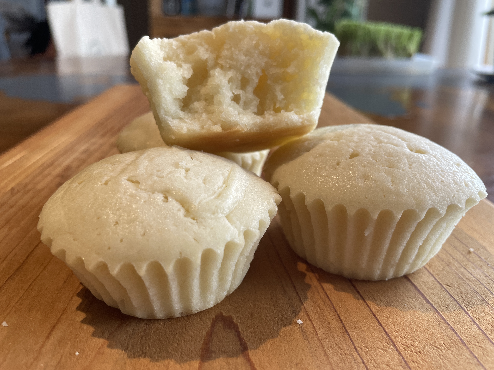

レシピ集
お気に入りのレシピを少しずつ掲載していきます。
ヴィーガンチョコマフィン

調理時間：40分 小さめ12個分
材料
① 薄力粉 200g
② 純ココア 40g
③ ベーキングパウダー 4g
一緒にふるう
④ ココナッツオイル 100g
湯煎で溶かす
⑤ ココナッツミルク 240g
⑥ 砂糖 120g
⑦ 塩 1g
湯煎したココナッツオイル
混ぜる
①〜③のグループ
⑤〜⑦のグループ
合わせて混ぜる
作り方
- 薄力粉・ココア・ベーキングパウダーを合わせてふるう。
- ココナッツオイルが固まっていれば湯煎で溶かす。
- 塩・砂糖・ココナッツミルク・ココナッツオイルを合わせてよく混ぜる。
- ふるった粉類と液体をよく混ぜ合わせる。
- マフィン型にベーキングカップを入れて生地を流し、160℃のオーブンで25分焼く。
ココナッツヴィーガンマフィン

調理時間：40分 小さめ6個分
材料
① 薄力粉 150g
② ベーキングパウダー 3g
一緒にふるう
③ ココナッツオイル 50g
湯煎で溶かす
④ ココナッツミルク 130g
⑤ 砂糖 50g
⑥ 塩 0.5g
湯煎したココナッツオイル
混ぜる
①〜②のグループ
④〜⑥のグループ
合わせて混ぜる
作り方
- 薄力粉・ベーキングパウダーを合わせてふるう。
- ココナッツオイルが固まっていれば湯煎で溶かす。
- ココナッツミルク・砂糖・塩・湯煎したココナッツオイルを合わせてよく混ぜる。
- ふるった粉類と液体をよく混ぜ合わせる。
- マフィン型にベーキングカップを入れて生地を流し、160℃のオーブンで25分焼く。